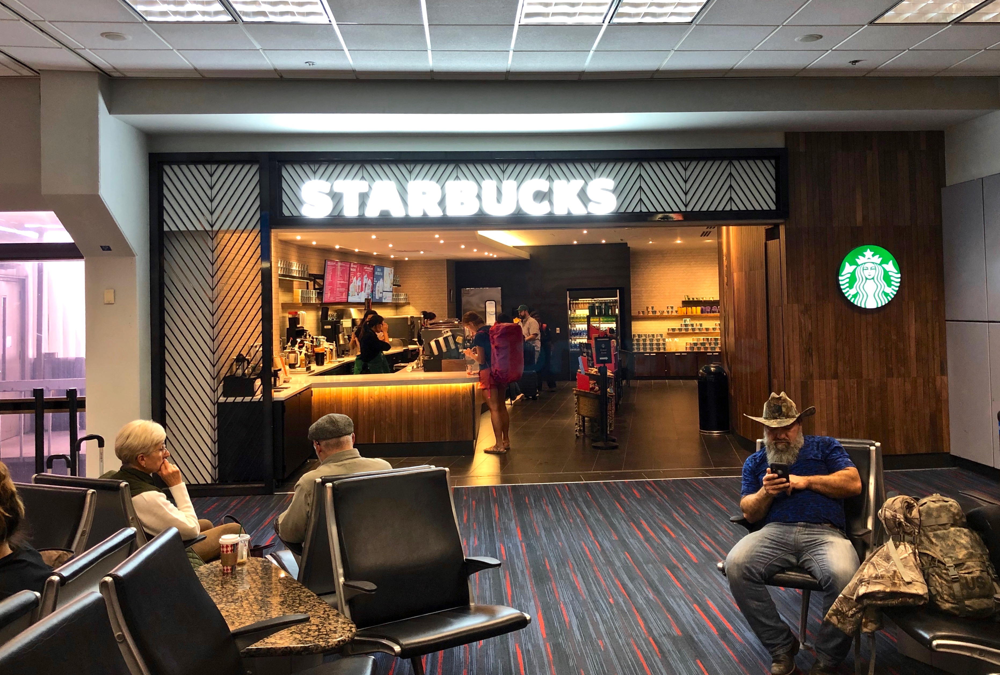

|  | Starbucks Corporation adalah sebuah perusahaan kopi dan jaringan kedai kopi global asal Amerika Serikat yang berkantor pusat di Seattle, Washington. Starbucks adalah perusahaan kedai kopi terbesar di dunia,dengan 20.336 kedai di 61 negara, termasuk 13.123 di Amerika Serikat, 1.299 di Kanada, 977 di Jepang, 793 di Britania Raya, 732 di Cina, 473 di Korea Selatan, 363 di Meksiko, 282 di Taiwan, 204 di Filipina, 164 di Thailand dan 326 di Indonesia.
Starbucks menjual minuman panas dan dingin, biji kopi, salad, sandwich panas dan dingin, kue kering manis, camilan, dan barang-barang seperti gelas dan tumbler. Melalui divisi Starbucks Entertainment dan merek Hear Music, perusahaan ini juga memasarkan buku, musik, dan film. Banyak di antara produk perusahaan yang bersifat musiman atau spesifik terhadap daerah tempat kedai berdiri. Es krim dan kopi Starbucks juga dijual di toko grosir. Sejak didirikan tahun 1971 di Seattle sebagai pemanggang dan pengecer biji kopi setempat, Starbucks meluas dengan cepat. Pada tahun 1990-an, Starbucks membuka kedai baru setiap hari kerja, satu tahap yang terus dilanjutkan sampai tahun 2000-an. Kedai pertama di luar Amerika Serikat atau Kanada dibuka pada pertengahan 1990-an, dan jumlah kedainya di luar negeri mewakili sepertiga dari total kedai Starbucks di seluruh dunia. Perusahaan ini berencana membuka 900 kedai baru di luar Amerika Serikat pada tahun 2009, dan telah menutup 300 kedai di Amerika Serikat sejak 2008. |